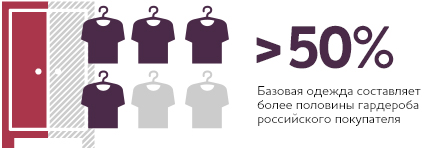
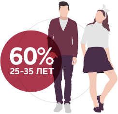
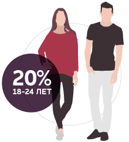
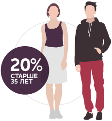

OH, MY
Oh, my – российская марка одежды; была создана в Санкт-Петербурге в 2008 году
Средний чек
в Интернет-магазине:
Сегодня марка выпускает более 100 моделей одежды из качественных материалов – платья, юбки, свитера, кофты, фуфайки, треники, носки, и т.д.
Oh, my производит простую базовую одежду. Цветовая гамма – отличительная особенность вещей компании. Все модели выпускаются в белом, черном и сером оттенках. Используются натуральные материалы: хлопок, шерсть, кашемир.
Качественные вещи без лишнего декора оказались очень востребованными. В них любой человек выглядит просто, естественно и аккуратно.
Первые годы существования компания развивалась усилиями трех молодых специалистов, веривших в большую цель – создание народного российского бренда одежды №1. За это время удалось организовать производство в Ленинградской области, Санкт-Петербурге и даже Латвии.
Изначально в ассортименте присутствовали самые базовые вещи из 100% хлопка: футболки, толстовки, шапки и шарфы. С каждым годом к ним добавлялись новые линии и фасоны.

В апреле 2010 года Oh, My открывают собственный Интернет-магазин, а также налаживают продажи своей продукции через мультибрендовых Интернет-ритейлеров. Сегодня это основной канал продаж, где реализуется весь ассортимент, включая вещи, выпущенные ограниченным тиражом.

«OH, MY» выражает экспрессию, эмоции и радость вне зависимости, говорит эти слова иностранец или русский. Такие же чувства покупатели должны испытывать при покупке одежды Oh, my.
  
Потребность в качественной базовой одежде у российских покупателей оказалась очень высокой. Она составляет более половины всех вещей в гардеробе. Понимая это, команда Oh, My сосредоточилась на подборе высококачественных тканей, прошедших сертификацию и контроль на производствах, а также на расширении выпускаемых линий. Несмотря на высокий спрос и качество, компания сохраняет ценовую политику, позволяющую приобретать вещи под брендом Oh, My как жителям мегаполиса, так и тем, кто находится в небольших городах по всей территории России.
В 2013 году сократили сроки производства с 6 до 2-х месяцев
Аудитория бренда Oh, My в социальных сетях – 18 500 человек
Рентабельность на уровне 15%
Продажи в динамике за 3 года
По итогам 2012 года Oh, my стала лучшей локальной маркой в онлайн-голосовании городского ресурса TheVillage (проект LookAtMedia), опередив всех именитых конкурентов.
В этом же году происходит расширение ассортимента выпускаемой продукции. В расширенную линию вошли платья, футболки, майки, юбки, толстовки. Начался выпуск базовой одежды для мужчин.
2013 год стал для компании прорывным: сократились сроки разработки и производства моделей с полугода до двух месяцев; себестоимость уменьшилась на 20%, а продажи выросли в 9 раз. Весной этого же года Oh, My разработали форму для продавцов мороженого ЦПКиО Им. Горького.
Сейчас в Oh, My работают больше 10 человек, занимающиеся разработкой линий одежды, маркетингом и продажами. В планах на 2014 год – увеличение производства в России и за ее пределами, увеличение объема продаж до одного миллиона долларов, а также выпуск новых линий одежды в партнерстве с русскими и европейскими дизайнерами.
На протяжении нескольких лет работал в ряде ведущих издательских домов Санкт-Петербурга, где получил богатый опыт в области PR, маркетинга продаж и менеджмента. Научно-историческая база знаний, полученная в ВУЗе, помогла сформировать жизненные принципы и ориентиры на будущее.
Работая в компании Ikea в отделе продаж, Сергей также получил практические знания в области дизайна, которые, впоследствии легли в основу создания будущего проекта.
Желание создавать качественную одежду, максимально простую по крою и подходящую всем родилось само собой; в России не хватало производителей простой повседневной одежды, которую бы хотелось носить, не снимая. При этом, главная задача состояла в самоопределении марки и ее аудитории.
Так, в 2008 году Сергей запустил бренд Oh, my, ранее именуемый Oh, my Posh. Впоследствии бренд был переименован в Oh, my. В 2010 году Сергей открыл фирменный онлайн-магазин www.ohmyltd.ru, который на сегодняшний день является главным инструментом оптовых и розничных продаж ассортимента бренда в России.
Помимо моды, Сергей изучает фотодело, много путешествует, черпая вдохновение из многогранных архитектурных городских пейзажей и ландшафтов.
Ковеленов
Директор Oh, my